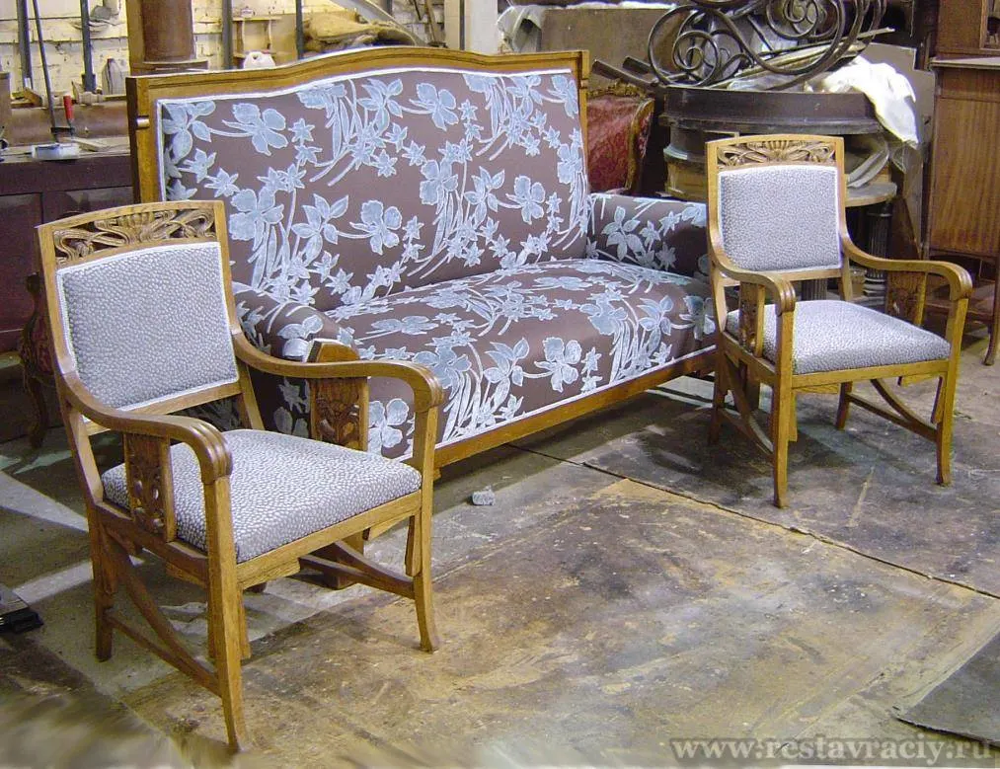
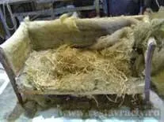
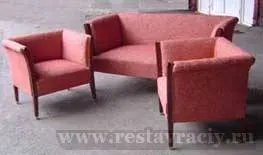
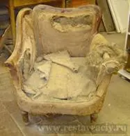
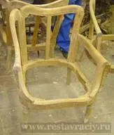
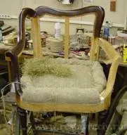
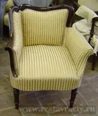

Работы и техники
Запах старой мебели
Реставрационная мастерская поможет устранить практически любой неприятный затхлый запах старой мебели.


О чём рассказывает мастерская
- Запах старого шкафа
- Аптечка для дома
- Виды аптечек
- Как сделать аптечку
- Шкаф аптечка
- Старая аптечка
- Старинная аптечка
- Антикварная из дерева резная купить
- Аптечка своими руками
- Ремонт аптечки (зоо)
В материале мастерской
Фотографии и детали



Открыть снимок у мастерской


Открыть снимок у мастерской


Открыть снимок у мастерской


Открыть снимок у мастерской


Открыть снимок у мастерской


Открыть снимок у мастерской
Посмотреть снимки с сайта мастерской 9
Оригинальные фотографии откроются здесь с сайта мастерской.
 Открыть снимок у мастерской
Открыть снимок у мастерской  Открыть снимок у мастерской
Открыть снимок у мастерской  Открыть снимок у мастерской
Открыть снимок у мастерской  Открыть снимок у мастерской
Открыть снимок у мастерской  Открыть снимок у мастерской
Открыть снимок у мастерской  Открыть снимок у мастерской
Открыть снимок у мастерской  Открыть снимок у мастерской
Открыть снимок у мастерской  Открыть снимок у мастерской
Открыть снимок у мастерской  Открыть снимок у мастерской
Открыть снимок у мастерской Есть похожая вещь?
Подберите ракурсы для предварительной оценки.